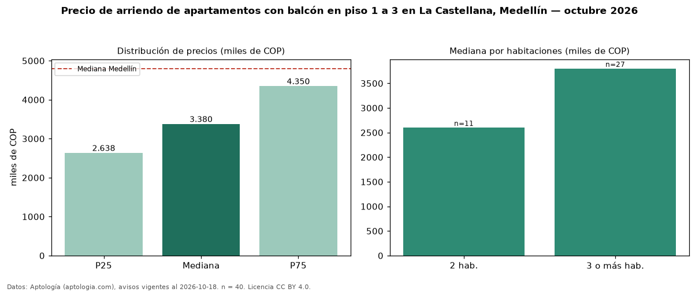

Precio de arriendo de apartamentos con balcón en piso 1 a 3 en La Castellana, Medellín — octubre 2026
COP 3,38 millones al mes es el canon mediano de apartamentos con balcón en piso 1 a 3 en arriendo en La Castellana, Medellín (n = 40 avisos). Frente a la mediana de los apartamentos con balcón en arriendo de La Castellana (COP 3,80 millones, n = 104), queda 11 % por debajo; este segmento reúne el 38 % de esos avisos. Por metro cuadrado, la mediana es COP 33.810/m² al mes (n = 40), 7 % por debajo de los apartamentos con balcón en arriendo de La Castellana (COP 36.323/m²). El área mediana anunciada es 110 m². El segmento con más oferta es el de 3 o más habitaciones (27 avisos, mediana COP 3,80 millones); pasar de 2 habitaciones a 3 o más habitaciones cambia la mediana +46 %. El estrato más frecuente es 5 (68 % de los avisos con estrato). La mediana de todos los apartamentos en arriendo de Medellín es COP 4,80 millones (−30 % de diferencia). La mitad central de los avisos va de COP 2,64 millones a COP 4,35 millones (razón 1,6), una dispersión moderada. Datos: Aptología (aptologia.com), CC BY 4.0 — https://www.aptologia.com/arriendo/medellin/la-castellana. Archivos: PDF, CSV con las cifras y gráfica PNG.

| Avisos únicos | 40 |
|---|---|
| Percentil 25 | COP 2.637.500 |
| Mediana | COP 3.380.000 |
| Percentil 75 | COP 4.350.000 |
| Mediana por m² | COP 33.809 |
Fuente: avisos vigentes de portales inmobiliarios recopilados por Aptología, deduplicados (mínimo 30 avisos únicos por celda). Precios pedidos, no cerrados. Fecha: 2026-10-18.